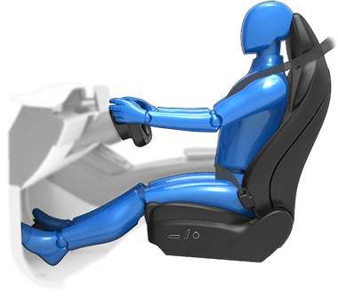

The seat, head support, seat belt and airbags work together to maximize your safety. Using these correctly ensures greater protection.
Position the seat so you can wear the seat belt correctly, while being as far away from the front airbag as possible:
Using seat belts and child safety seats is the most effective way to protect occupants if a collision occurs. Therefore, wearing a seat belt is required by law in most jurisdictions. All seats \ are equipped with three-point inertia reel seat belts. Inertia reel belts are automatically tensioned to allow occupants to move comfortably during normal driving conditions. To securely hold child safety seats, all passenger seating positions are equipped with an automatic locking retractor (ALR) feature that, by fully extracting the seat belt (beyond the length needed for a typical adult occupant), locks the belt into place until the seat belt is unbuckled (see Installing Seat Belt Retained Child Seats). The seat belt reel automatically locks to prevent movement of occupants if Model S experiences a force associated with hard acceleration, braking, cornering, or an impact in a collision.
You can temporarily disable a seat belt reminder associated with a rear seating position. This is useful when you are carrying an object in a rear seat that triggers the seat belt reminder alert. To disable the reminder, touch the associated seat on the seat belt reminder popup message that displays on the touchscreen when a seat belt reminder is active. When a reminder is disabled, the seat belt reminder icon is replaced by a seat icon, for the current drive only. Touch the seat again to re-enable the reminder.